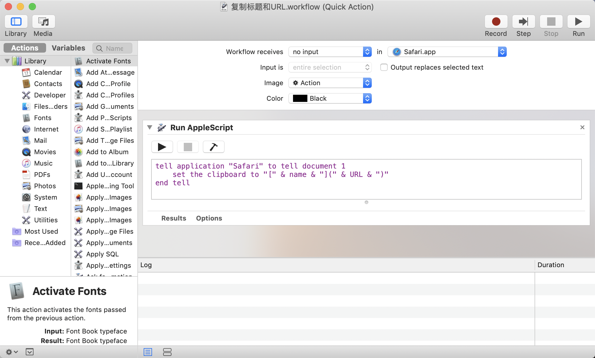
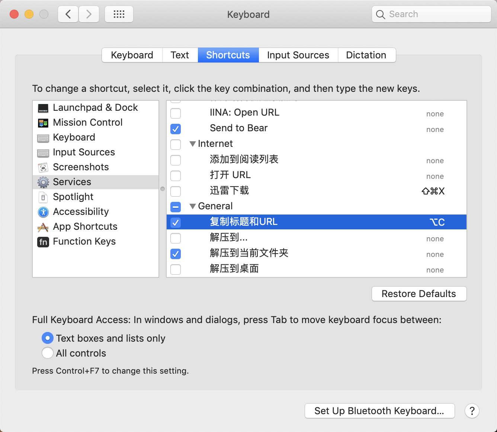

Me
- 苹果还是有些良心的
上周正在用电脑时, 句号键突然就失灵了, 正常按没反应, 重按才可以打出句号. 只好拿到官方店里去检修, 在这里要夸一句, 苹果还是有些良心的, Genius Bar 的工作人员也非常负责, 确认了情况之后很快决定要免费更换电脑的整个键盘.
- 在使用了 Mac 之后, 才觉得自己能用好 Windows 了
所以电脑就被留在了 Genius Bar, 接下来的几天没有电脑怎么办? 我打算拿之前在用的 Windows 电脑凑合几天. 电脑一开机, 以前的软件什么的我当时就卸载了很多, 我发现一年的 Mac 使用改变了很多我以前用电脑的思路. 比如以前用 Git 一定要图形化界面, 现在就更偏爱使用命令; 试用下 Powershell 总感觉不太舒服, 不过好在还有 Git Bash 可以用; 以前文件夹喜欢在一个特定的盘里建, 现在感觉放在 home 文件夹下就挺好的; 还有就是更改 DNS 之类功能的入口实在难找, 明明可以设置的更加合理和易于发现一些; 虽然我的电脑已经好几年了, 但整体上还是非常流畅的, 简单快速的动画我也很喜欢; 没有鼠标的话可能不太好用, 但装上鼠标之后就很灵活, 我可以轻松地在一个桌面里操作多个窗口, 但 Mac 上相同操作的体验就会让我很烦躁, 各种不方便, 再加上 Windows 电脑还可以玩游戏, 只不过现在编码还是存在很多问题, 如果把系统设置成 beta 状态的全局 utf-8, 会有很多地方不兼容, 如果是之前的 GBK, 编程的时候又有一些奇奇怪怪的、不必要的麻烦; 总的来说, 再次用 Windows 仍然感觉非常亲切, 不过有种感觉, 是在使用了 Mac 之后, 才觉得自己能用好 Windows 了.
- debug 式写作
再则是关于打字的事情, 我打字速度很慢, 虽然也尝试练习过, 但基本上没什么成果, 所以后来才投机取巧学了双拼, 但打字速度还是很慢, 我发现打字的时候我并不会刻意加快速度, 而是会以一种自然而然地速度、缓慢地输出脑中的文字, 并且是磕磕碰碰地倒出来, 打出之后还要来来回回删改和修正, 所以我写东西跟写代码的过程非常像, 代码可能 70% 的时间都在 debug, 我写东西也是这样的, 萦绕在心中的一个想法, 要 debug 很久才能通过(虽然依旧是非常一般的代码, 依旧是没什么吸引力的文字).
- 商品变得越来越漂亮了
几乎年年陪妈妈逛超市, 今年愈发的感觉商品包装越来越有设计感, 不管是零食、调料、日用品还是新鲜蔬菜的保鲜包装等, 不错的设计总是让我产生很强烈的购买冲动, 不过这些好的设计也是有代价的, 他们往往是这个品牌中更贵的一档.
Posts
堕胎法律
我不知道《好奇心日报》是不是故意的, 我从它的日常报道中, 时不时地读到多次有关其他国家堕胎法律的内容. 想到我国目前的人口状况, 所以去了解了一下, 这些国家有这样的法律名义上的原因主要是人权和宗教, 像德国, 女性在怀孕三个月之后, 如果没有特殊情况, 就会被禁止实施堕胎手术, 相应的策略可以是禁止医疗院校教授堕胎相关的知识、提交申请才可以堕胎等. 这让我觉得, 将来哪一天我国实施类似的法律似乎也大有可能.挪威首都奥斯陆无车化进行中，一切进展还算顺利_设计_好奇心日报
都在谈电动车、新能源之类的, 之前完全没见过的一种解决方案, 感觉很酷(毕竟我有点放弃考驾照了).老龄化太严重，日本政府开始琢磨怎么处理废弃的成人尿布_文化_好奇心日报
如果不是因为发展到了这一步, 怎么能想到会遇到这样的问题呢?
Words
「认知虚胖」
上学以来, 听播客的时间少了很多, 一方面注意力被很多东西吸引, 一方面时间上也不太够, 想安安静静地听会并不容易. 在一些散碎的时间, 即便听也是听一些轻松、简单的内容. 到家之后, 免不了要做买菜、洗菜、切菜之类的活, 这种时候我都会听播客. 有些人说戴上耳机, 一听音乐就进入了自己的王国, 那可能我的王国就是听播客了吧. 不过, 在我变得没时间听播客的同时, 我发现之前喜欢的一些播客也都不怎么更新了, 所以我大部分时候都是在找一些往期的播客来听.
这一次, 我又一次被输入了一个概念——「认知虚胖」, 其实和我之前说的「审美」意思很接近, 表述更加容易理解, 各种事物的特点, 一些做法的优劣, 判断某事物好坏的根据, 知识性的东西都可以说是认知, 认知是知识, 而不是技能、不是经验, 它们给人充盈感, 但某种程度上可以说毫无用处, 因为空有认知, 没有技能, 甚至没有实践的可能性, 另一方面, 认知虚胖本质可以说是技能和认知不匹配, 这种状况并不快乐.
podcast@疯投圈
New
- 在 Safari 中一键复制 Markdown 格式的 URL 和标题
在「自动操作」中新建快速操作(Service), 然后选择运行 AppleScript 模版, 设置无需输入(no input), 应用范围选 Safari 浏览器, 输入以下代码, 然后在设置的「快捷键」中设置快捷键即可, 在 Safari 就可以享受 「TabCopy」插件的快乐.

